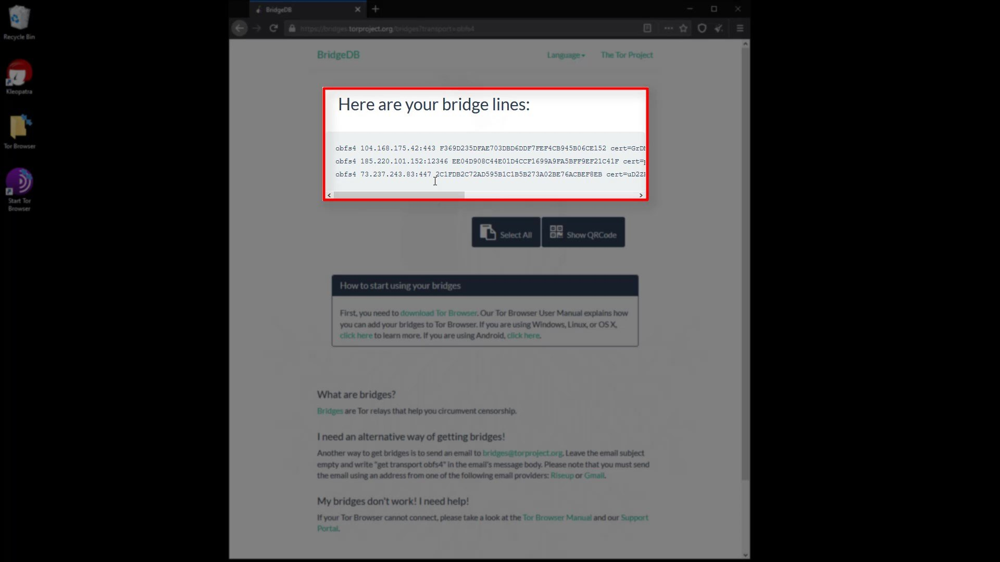

Providing Bridge Connection
When i talked about the working structure of the Tor network at the beginning of the course, i mentioned that the list of servers in the Tor network is publicly published and therefore Tor servers can be easily blocked.
Authorities such as the government, your service provider, or your network administrator can easily blocking the Tor network through this publicly published list of servers.

It is possible that you will often encounter situations where the Tor network is blocked because it is easy to block.
In such cases, you can use the bridge connections provided by the Tor project to overcome the obstacle.

Since the list of bridge routers is kept confidential, all bridge connections cannot be blocked at once, so even if the servers are blocked, access to the Tor network can be achieved over the bridge connection.
To establish the bridge connection, you need to visit the https://bridges.torproject.org/options

After reaching the website, select the obfs4 option and click the "get bridges" button. Now lastly enter the security code.
After entering the security code, you can see the address information required for the bridge connection. You can copied this addresses from here.

If tor is blocked on the internet you are connected to, this website is probably also blocked. If you haven't been able to obtain bridge addresses in this way, you can access this website using any VPN service. You can also get these addresses from within the Tor browser as an alternative to the VPN option. When we talking about Tor Browser settings, you will see how you can get bridge addresses from within the Tor browser.
Now let's click the three-line icon on the right side of browser to open the menu to make the necessary settings for the bridge. Click on " Options " from the menu that opens. After the options window opens, click on the " Tor " tab on the left. Here we will make the necessary settings for the bridge connection. To configure the bridge, first, let's checking the "use bridge" box.
If you have bridge addresses, you can click on the " Provide a bridge " option and enter the bridge address in this field.

Thus, the Tor network will be provided over the bridge connection you have specified. To test whether a bridge connection is available, let's go to "check.torproject.org" again and check the nodes used to connect to this address.
As you can see, the first node is the bridge. This means that you were able to successfully establish the bridge connection. In addition, if you don't have addresses for the bridge connection, you can also use the "Select a built-in bridge" or "Request a bridge from torproject.org" options from the bridges section.If you use the "Select a built-in bridge" option, the bridges built into the tor browser are used. If you select the obfs4 option here, a built-in bridge will be used.

You can easily overcome situations where the Tor network is censored by using all these methods.

If you are using the bridge connection and still have problems with the access, you are probably dealing with a censorship mechanism that detects that you have accessed the Tor network by thoroughly analyzing your network traffic. As a simple solution to this situation, you may prefer to use the Tor network over VPN. Moreover, using VPN will may provide you with much more security measures as well as bypassing the censorship.
If you don't have access blocked to the Tor network, using a bridge connection won't make sense because won't provide you with extra security. Please note that the purpose of the bridge is only to bypass censorship, not to provide extra security. However, in some cases, you may want to use a VPN, even if you don't have access block to the Tor network. To better understand why, let's explain the effects of VPN usage on the Tor network by handling Tor connection over VPN.